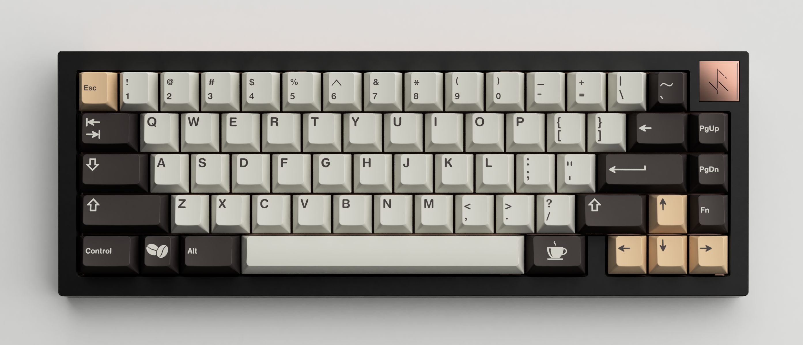

Many of us have jobs that require us to sit in front of a computer screen using our keyboards for hours. So wouldn't it be nice to have a custom keyboard that is catered to your personality and sound preference? There is a diverse set of keycaps, sounds, and feel that can make your typing experience that much better on a daily basis. However, be careful of the rabbit hole custom keyboards can create as entry level boards can easily reach $100. Before we get into the nitty gritty details of building process, if you ever hear of an endgame keyboard, that is false. There is no endgame.
Here is what is required to build a keyboard:
65% Keyboard Case
65% PCB & Plate
Stabilizers
Keycaps
Switches (roughly 70)
Soldering Iron & Solder
Optional items:
Keyboard Lube (most common lube: krytox 205-g0)
Switch Opener & Puller
Desoldering Pump (to desolder switches)
Although most 65% keyboards use about 67 switches, it is recommended to always buy slightly more. This is in the case that you accidentally break a pin off the switch or lose one.